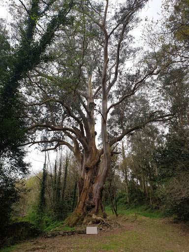
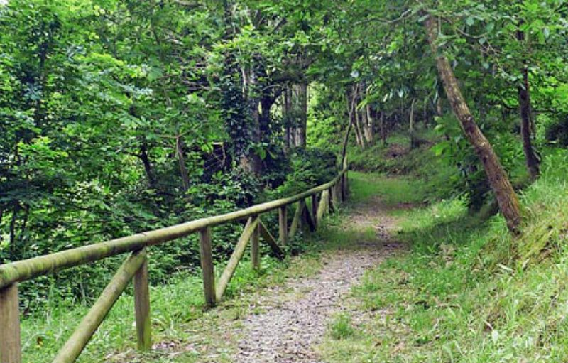
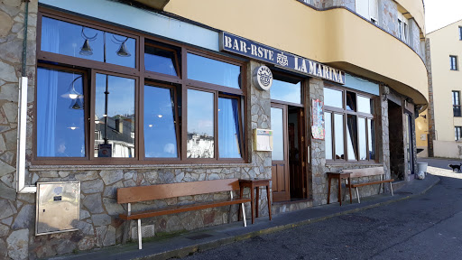
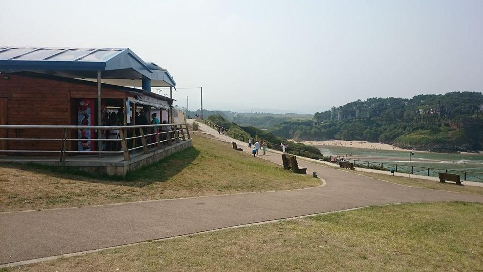
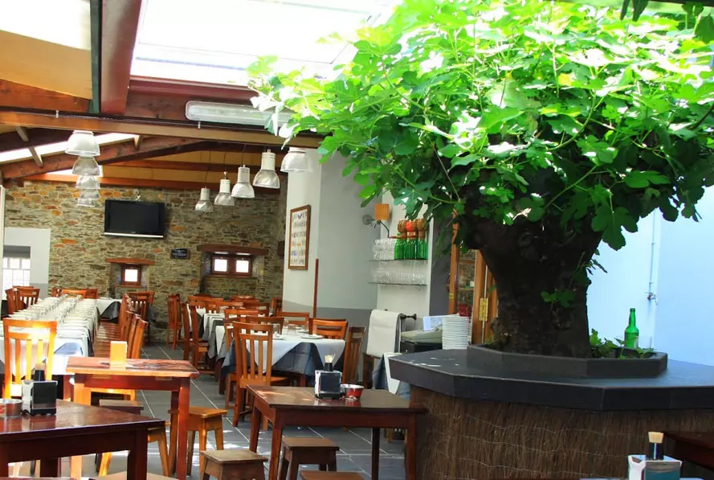
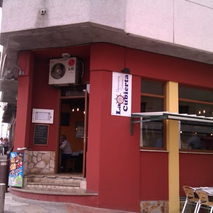

Se puede ir caminando desde Tapia, está a los pocos kilómetros, es una ruta con un poco de desnivel pero muy sencilla y corta.
 Aquí tmabién puedes ver, desde fuera, la Casa Palaciega Don Gonzalo Méndez de Cancio.Pincha aquí y puedes informarte un poco más.
Puedes apuntarte a cursillos de surf, tanto si ya sabes algo o no sabes nada.
Aquí puedes ver su Instagram. Aquí, puedes echarle un vistazo a su Facebook.
Si vas en Semana Sant5a, podrás presenciar el campeonato mundial de surf.
Este es el cartel publicitario del año 2022:
Para comer o cenar, hay varias opciones también.
En el puerto:
En la Marina
En primera línea de playa (en temporada de verano):
En los Apaches
O por el pueblo:
En la Terraza
En el Pilón
En la Cubierta
O en el pueblo de al lado, en Navia, Los Olivos